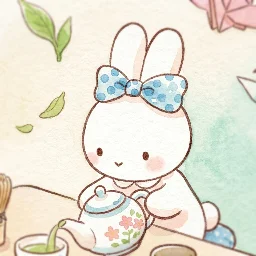
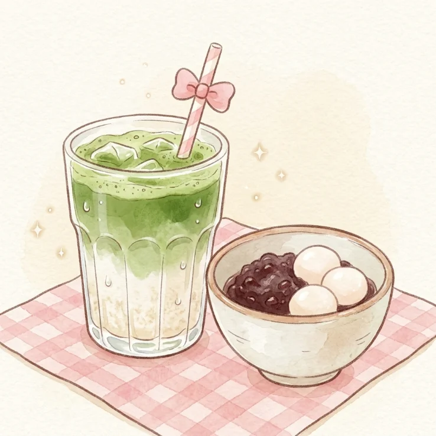

about me
わたしのこと

Hi, I'm Yana. I fell in love with Japanese tea. Pursuing a certificate in Japanese Tea foundation, currently a hobbist. Wanted to share this and host simple tea house events.
Whisked matcha, warm hōjicha and homemade sweets, served slowly at a small table for a few guests at a time.

Hi, I'm Yana. I fell in love with Japanese tea. Pursuing a certificate in Japanese Tea foundation, currently a hobbist. Wanted to share this and host simple tea house events.
Message me to pick a weekend slot. Four seats per session, so it stays quiet.
Watch the matcha come together, or just settle in while your pot steeps.
A little plate of sweets, refills of tea, and no reason to hurry anywhere.
